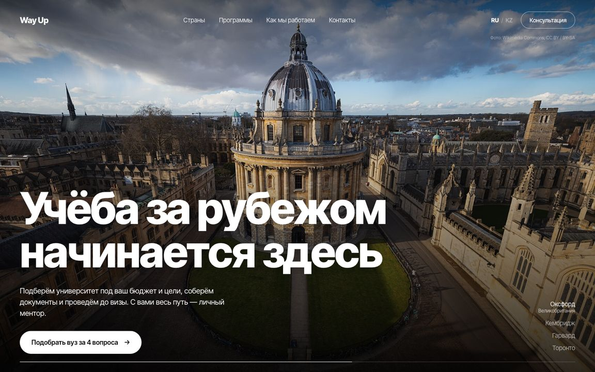
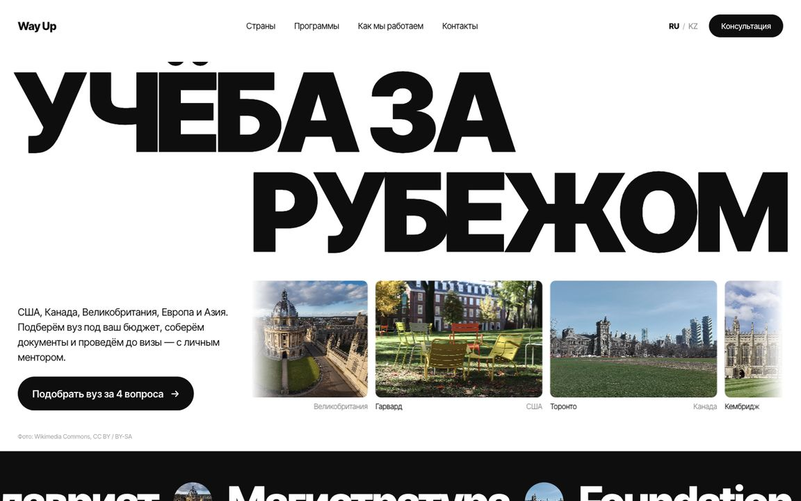
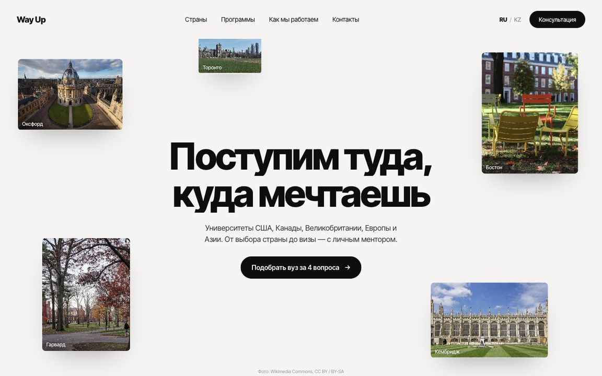

Ниже всё одинаковое: страны, программы, опросник на 4 шага с передачей заявки и UTM в amoCRM, этапы, ментор, переключатель RU/KZ. Отличается только первый экран. Откройте любой и пройдите опросник до конца.

Фото кампусов на весь экран сменяются сами, заголовок выезжает по словам.
Рекомендуем
Огромный заголовок от края до края и бегущая лента фото.

Заголовок по центру, фото вузов вокруг двигаются за курсором.